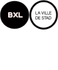

Un mélange fascinant de culture, de divertissement et de délicieuses découvertes Le quartier du canal est un quartier animé, c'est le moins que l'on puisse dire ! En peu de temps, Tour & Taxis et ses environs sont devenus THE place to be dans la capitale. Avec une multitude d'événements, de musées, de centres artistiques et de parcs à thème, vous ne vous y ennuierez pas un instant. Ajoutez-y l'excellent choix d'adresses gastronomiques, de (micro) brasseries et de lieux de sortie et votre escapade sera une montagne russe de moments inoubliables !
